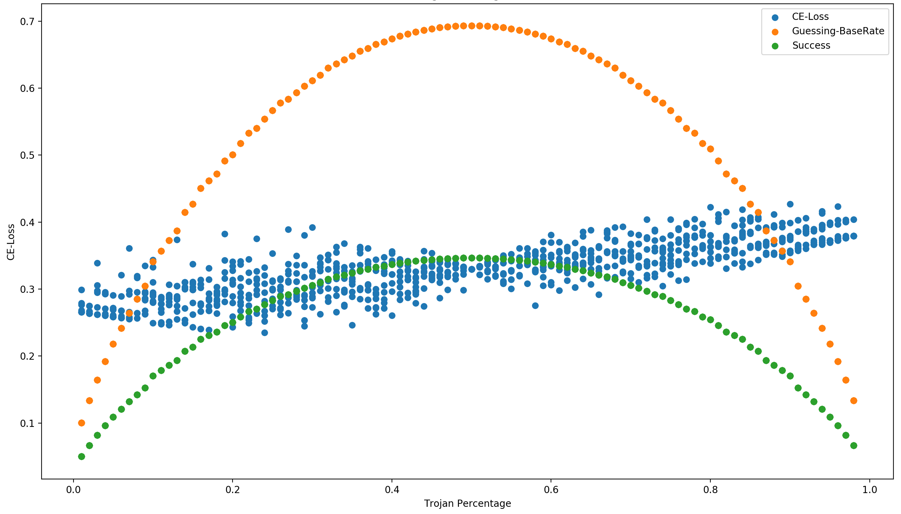

Overview¶
The TrojAI leaderboard is organized into a series of rounds of increasing difficulty.
Metrics¶
Submitted detectors are evaluated based on their accuracy in detecting whether an AI has been subject to a Trojan attack. Specifically the accuracy metric is the log score, or cross entropy, which is a proper scoring rule for measuring the accuracy of a probabilistic prediction. The log score is well-understood by machine learning researchers, as it is often the objective function used to train their AIs. The log score is calculated for an outcome \(y\) (0 or 1) and a forecast \(p\) (between 0 and 1):
This simplifies to \(-\log{(p)}\) if \(y=1\) and \(-\log{(1-p)}\) if \(y=0\). Theoretically the log score ranges from infinity (confident and wrong) to 0 (confident and correct). However, in practice an epsilon of \(1e-12\) is used to prevent numerical instability. Therefore, the cross entropy scores range from 0 (confident and correct) to about 36 (confident and wrong).
The cross entropy confidence interval is calculated based upon the full set of prediction \(P\) and ground truth \(G\) values as follows.
The source code for all metrics calculated by the test-harness can be found on GitHub: https://github.com/usnistgov/trojai-test-harness/blob/master/actor_executor/metrics.py
Success¶
The goal for each round will be to reach the performance plateau, where diminishing returns on metric improvement kick in.
Once a round’s goal is reached the next round may begin. The total number of leaderboard rounds could range from 1 to a large number; this will be determined by how quickly the target for each round is reached by the performer team.
The entire performer team will move together between rounds. It is expected, but not required, that the performer team will need to develop and deploy new solutions for each round. During the Program it is acceptable for the performer team to develop a mix of methods, some of which are low-hanging fruit expected to quickly succeed at an early round and some of which will take longer to develop but are needed to succeed at later rounds.
Multiple open rounds are supported. If new trojan detection progress on the current round is applicable to a prior round, teams are encouraged to submit improved solutions to the prior leaderboards.
Final round may be terminated at the discretion of the coordinator.
Round termination involves the following: 1) running the best solutions against the holdout dataset to determine their final cross entropy score, 2) updating the test harness with the next rounds data, and 3) opening the leaderboard for submissions to the next round.
Data Splits¶
There are 3 splits of data used for the TrojAI challenge.
Train data - freely disseminated data that serves as the data trojan detection solutions are developed against on a daily basis by performers.
Test data - sequestered data which the interactive leaderboard results are based on. However, since performers are optimizing their solutions to minimize the cross entropy loss of their solution on this dataset, there will inevitably be some over-fitting where solutions are too tailored to the leaderboard dataset.
Holdout data - sequestered data which serves as our best approximation of the true generalization ability of the trojan detection solutions. Submitted detectors will only run against this dataset after submission to each round has concluded.
Additional Analysis¶
While the average cross entropy for all data points in the test set are returned for submissions to the leaderboard, the test harness keeps track of performance per individual data point.
This enables sub-setting the dataset to create arbitrary trojan poisoning percentages.
This plot uses the results from a single submission and sweeps the trojan percentage from 1% to 99% (building the subset 10 fold to account for variation in which data points get included in the subset).
{kind=link}
So while a given solution might meet the round termination accuracy criteria for a trojan probability of 50%, the performance of the detector at lower or higher trojan probabilities can also be calculated.